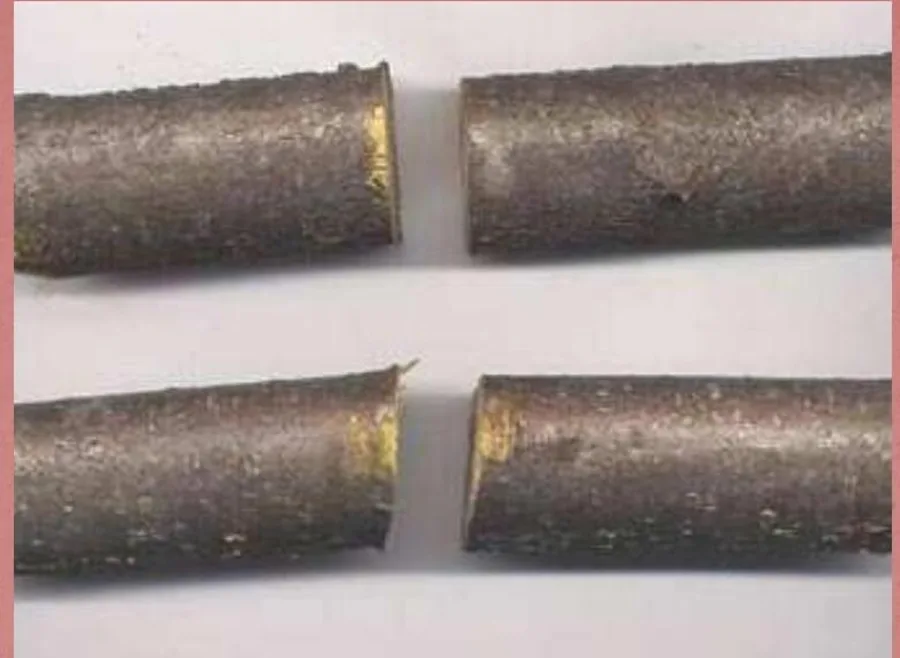

Módulo 10 · 25 minutos
Cortar para que rinda: poda y pinzado
Al terminar, vas a poder decidir si conviene podar, elegir el momento y realizar un corte que respete la respuesta de la planta.
Una herramienta frente a una rama sana
La tijera está afilada y la planta creció más de lo esperado. Cortar parece la respuesta evidente. Sin embargo, una poda es siempre la supresión deliberada de una parte de la planta y cada corte abre una herida.
En la naturaleza, las plantas viven sin poda. Somos nosotros quienes las podamos para alcanzar un resultado de seguridad, salud, estética o productividad. Por eso la primera decisión no es dónde cortar, sino si realmente existe un objetivo.
Mejor no podar que podar mal
Una poda adecuada depende de la especie, su estado y el resultado buscado. No se poda por costumbre. La eliminación de madera muerta y de partes enfermas o dañadas es claramente beneficiosa y puede hacerse en cualquier momento; fuera de esos casos, cada intervención necesita criterio.
En aromáticas hay pautas concretas. Orégano, melisa, lavanda, salvia y santolina se recortan después de la floración para favorecer un nuevo desarrollo sano y evitar que se vuelvan leñosas. La menta se recorta en verano para estimular hojas nuevas. El tomillo se poda poco y con frecuencia durante primavera y verano.
Incluso con poda anual, algunas plantas pierden su forma original después de varios años y deben reemplazarse. También se retiran flores pasadas, capítulos y hojas secas para que no consuman reservas ni deterioren el aspecto de la mata.
Pinzar para cambiar la forma
Cuando una planta se alarga y queda poco densa, puede practicarse un . El despunte interrumpe el crecimiento de la punta y favorece una mata más compacta y ramificada.
Si se corta un tallo para usar un ramito de perejil o menta, el corte se hace por encima de una yema. Esa yema conserva la posibilidad de continuar el desarrollo.
En una rama fina, el corte se realiza entre seis y diez milímetros por encima de la yema. Demasiado cerca puede dañarla; demasiado lejos deja un tocón que termina muriendo. Con yemas alternas, el corte se inclina unos 45 grados hacia el lado contrario. Con yemas opuestas, se hace recto sobre ellas.
Tres podas para tres edades
Formación
Se realiza en la fase juvenil y define la estructura que la planta puede conservar durante toda su vida. Los cortes suelen ser moderados.
Mantenimiento
Actúa sobre la planta madura: guía el desarrollo, retrasa el envejecimiento y favorece la floración.
Rejuvenecimiento
Elimina partes viejas y poco productivas para estimular otras nuevas. En una planta envejecida los cortes no deben ser drásticos porque la recuperación es más difícil.
El calendario está escrito en la madera
Durante la brotación primaveral no conviene podar: la planta moviliza reservas que se perderían con el corte. Tampoco durante la caída otoñal de las hojas, cuando recupera sustancias y las almacena para atravesar el invierno.
En invierno, las caducifolias detienen su actividad, hay menos sangrado y las ramas sin hojas permiten ver la estructura. Los cortes tienen efecto estimulante. En primavera y verano, las heridas cierran más rápido, pero hay más sangrado, condiciones favorables para patógenos y los cortes producen un efecto inhibitorio.
La floración aporta una regla adicional. Las plantas que florecen al final del invierno o comienzo de la primavera lo hacen sobre ; se podan justo después de florecer. Las que florecen al final de la primavera o en verano lo hacen sobre ; se podan en invierno.
La herramienta deja su firma
Las tijeras de una mano cortan ramas finas, de hasta 2,5 centímetros. Las de dos manos alcanzan ramas de cuatro o cinco centímetros. El tamaño debe corresponder al grosor: forzar la herramienta produce un mal corte y puede desajustarla.

Leé el borde del corte
Compará los extremos de las ramas. ¿Cuál conserva un borde más limpio? Observá especialmente la corteza a ambos lados. La diferencia visible permite anticipar qué herramienta conviene reservar para ramas vivas y cuál puede usarse sobre madera muerta.
Las tijeras se colocan con la cuchilla del lado de la rama que permanece. Las tijeras de yunque exigen menos esfuerzo, pero machacan la corteza y son desaconsejables para ramas vivas; resultan útiles para madera muerta.
Al terminar la jornada, las herramientas se limpian, desinfectan, secan, lubrican y se revisa el filo. Un corte limpio reduce el daño y una herramienta desinfectada evita extender enfermedades.
Actividad · Cuatro decisiones de corte
Prepará un calendario para:
- lavanda después de florecer;
- menta durante el verano;
- tomillo durante primavera y verano;
- una planta que florece al comienzo de la primavera sobre madera vieja.
Para cada caso anotá momento, objetivo, tipo de intervención y herramienta. Cerrá el ejercicio indicando dónde ubicarías el corte respecto de una yema.
Toda herida exige vigilancia
La mata quedó compacta y los cortes respetaron sus yemas. Aun así, el cultivo sigue expuesto. La próxima decisión será distinguir un ataque de una enfermedad y ambos de un problema de manejo antes de elegir una respuesta.
Guardá esta estación
Cuando puedas explicar la idea central con tus propias palabras, marcá el módulo como completado.